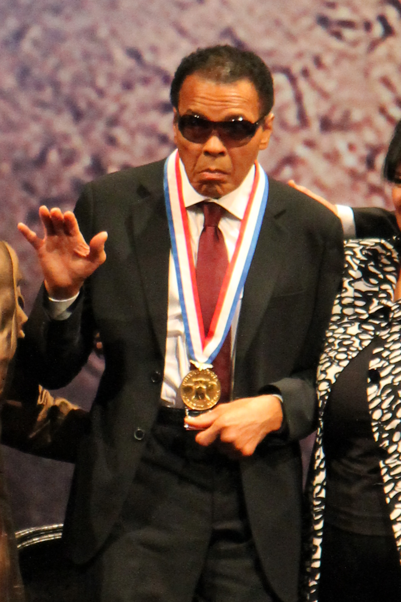

Muhammad Ali: His Life, History, Struggles and the Lessons He Left Behind

Muhammad Ali is remembered around the world as one of the greatest boxers in history. However, his life was much larger than what happened inside a boxing ring.
His journey included childhood struggles, Olympic success, professional championships, famous rivalries, religious conviction, political controversy, personal challenges, humanitarian work and many years of living with Parkinson's disease.
His story offers valuable lessons about confidence, discipline, courage, resilience, identity, responsibility and the importance of continuing after difficult moments.
Early Life
Muhammad Ali was born Cassius Marcellus Clay Jr. on January 17, 1942, in Louisville, Kentucky. His early years were spent in a society where racial discrimination affected many Black Americans.
His father, Cassius Marcellus Clay Sr., was a painter, while his mother, Odessa Clay, worked as a domestic worker. His upbringing helped shape the strong sense of identity that later became an important part of his public life.
Ali's path to boxing began when he was still a child. He did not begin with a guarantee of greatness. He began with curiosity, determination and a willingness to learn.
The Bicycle Incident
When Ali was twelve years old, a bicycle he owned was stolen. He was angry and reported the incident to police officer Joe Martin.
Martin was also a boxing trainer. After seeing the young boy's determination, he introduced him to boxing.
That unexpected meeting became an important turning point. A stolen bicycle had led Ali toward a sport that would eventually become his career.
Not every difficult event produces an immediate benefit. However, unexpected situations can sometimes introduce us to people, skills or opportunities that change our direction.
Learning the Sport
Ali trained seriously and gradually developed a style that depended on speed, movement, timing and confidence.
He learned that boxing was not simply about throwing powerful punches. A successful fighter also needed discipline, strategy, concentration and the ability to remain composed under pressure.
His development demonstrates an important difference between talent and skill. Natural ability may provide an advantage, but training is what transforms potential into performance.
Olympic Success
In 1960, Ali represented the United States at the Olympic Games in Rome.
At eighteen, he won the gold medal in the light heavyweight division. The achievement gave the young fighter international recognition.
Winning an Olympic medal was not the end of his journey. It became the beginning of a much larger professional career.
People usually notice the medal, trophy or achievement. They often do not see the countless hours of practice that made that achievement possible.
Entering Professional Boxing
After the Olympics, Ali became a professional boxer.
His unusual speed and movement made him different from many heavyweights. He was capable of moving around opponents rather than depending only on power.
He also developed a highly recognizable public personality. He spoke with confidence and often predicted his victories before his fights.
That personality helped turn him into a major attraction outside the boxing ring.
Becoming Heavyweight Champion
In 1964, Ali challenged Sonny Liston for the heavyweight championship. Liston was widely regarded as a powerful and intimidating champion.
Ali defeated Liston and became heavyweight champion at a relatively young age.
The victory established him as one of the most important young figures in professional boxing.
Confidence can help someone face a difficult challenge, but preparation gives that confidence a stronger foundation.
His New Identity
Religion became increasingly important in Ali's life.
He became associated with the Nation of Islam and changed his name from Cassius Clay to Muhammad Ali.
For Ali, the change represented his religious and personal identity. It became one of the most recognizable examples of a public figure choosing to define himself according to his beliefs.
Ali and Social Change
Ali became a public figure during a period of major social change in the United States.
He spoke openly about race, religion, identity and political issues. His willingness to express himself made him controversial to some people and inspirational to others.
His story demonstrates that a famous person can influence public discussion beyond their professional field.
Refusing Military Induction
During the Vietnam War, Ali was called for military induction.
He refused induction, linking his decision to his religious beliefs and opposition to the war.
The decision had serious consequences for his career. He was convicted and lost his boxing license and championship during the period in which he was unable to compete.
His legal battle eventually reached the United States Supreme Court, which overturned his conviction.
Standing behind a belief may have consequences. Major decisions should therefore be made carefully, with an understanding of both the principle involved and the possible cost.
Returning to Boxing
Ali eventually returned to professional boxing.
The years away from competition had cost him valuable time during his athletic prime. He also faced younger and powerful opponents.
Rather than depending entirely on the qualities that had made him successful as a young fighter, Ali increasingly relied on experience, strategy and ring intelligence.
A strategy that works at one stage of life may not work forever. Learning to adapt can help a person continue making progress when conditions change.
The Joe Frazier Rivalry
Joe Frazier became one of Ali's most important rivals.
Their first fight in 1971 was promoted as the Fight of the Century. Frazier defeated Ali by decision.
The loss was significant because it showed that Ali could be beaten. Yet it did not end his career.
The two fighters eventually met again, producing one of the most famous rivalries in boxing history.
The Rumble in the Jungle
In 1974, Ali faced George Foreman in Kinshasa, Zaire, in a fight that became known as the Rumble in the Jungle.
Foreman was younger and known for his tremendous punching power.
Ali used a strategy that allowed Foreman to spend energy while Ali protected himself and looked for opportunities to counter.
Ali stopped Foreman in the eighth round and regained the heavyweight championship.
Understanding your own strengths can help you develop a strategy that fits your abilities instead of simply copying another person's approach.
The Thrilla in Manila
Ali and Joe Frazier met for the third time in 1975 in the Philippines. The fight became known as the Thrilla in Manila.
The contest was physically exhausting for both fighters. Ali eventually won after Frazier's corner stopped the fight.
The contest became one of the defining moments of Ali's career and one of boxing's most remembered rivalries.
Winning the Championship Three Times
Ali eventually became the first boxer to win the heavyweight championship three times.
The achievement was particularly notable because his career had included defeat, controversy and several years away from competition.
Failure can interrupt a journey without permanently defining it. What matters is how a person responds after the setback.
Life Beyond the Boxing Ring
Ali's influence eventually extended far beyond sport.
He participated in humanitarian activities and international efforts. His fame gave him opportunities to speak to audiences that might not otherwise have heard his message.
His legacy therefore includes more than championships. It also includes his public personality, humanitarian work and influence on popular culture.
Personal Life
Ali's personal life included marriages, children and complicated relationships.
His experience demonstrates that fame does not remove ordinary human challenges.
Behind the public image was a person dealing with relationships, responsibilities, aging and personal difficulties.
Living With Parkinson's Disease
In his later years, Ali lived with Parkinson's disease.
The condition affected his movement and speech, creating a sharp contrast with the speed and physical ability that had defined his boxing career.
His later life reminded many people that physical ability can change, even for someone who was once regarded as one of the world's greatest athletes.
Physical ability can change with age or illness. Character, relationships, memories and positive influence can continue to matter long afterward.
Lessons From Muhammad Ali's Life
1. Believe in Your Ability
Ali's confidence was one of his most recognizable characteristics. Healthy confidence can encourage people to attempt difficult goals and continue working toward improvement.
2. Train Before Expecting Results
Ali's achievements were supported by years of training.
Important skills normally require patience, repetition and practice. Wanting immediate results cannot replace preparation.
3. Learn From Defeat
Ali experienced important defeats during his career.
Those defeats became chapters in his story rather than the final definition of his identity.
4. Adapt to Change
Ali's approach changed as his circumstances changed.
The lesson applies outside sport. People may need to change their methods when their responsibilities, resources or abilities change.
5. Understand Your Principles
Ali made important decisions based on beliefs that mattered deeply to him.
Knowing your values can make difficult decisions easier to understand, although every major decision should still be considered carefully.
6. Communicate Clearly
Ali understood the power of words.
His ability to communicate made him recognizable even to people who did not follow boxing.
7. Do Not Let One Failure Define You
A defeat is an event, not necessarily a permanent identity.
Ali's career demonstrates the importance of continuing after disappointment.
8. Use Influence Responsibly
Ali's international reputation gave him a platform.
Influence becomes more meaningful when it is used to help others and draw attention to important causes.
9. Prepare for the Long Journey
Ali's life contained many different chapters.
A person's life should not be judged only by one moment of success or one period of difficulty.
10. Think About Your Legacy
Championships and records matter, but people also remember character, actions, relationships and influence.
A lasting legacy is built through many decisions over time.
Why Muhammad Ali Remains Important
Muhammad Ali remains important because his story reaches beyond boxing.
He was an athlete, public speaker, religious figure, activist, humanitarian and cultural icon.
His life contained victories and defeats, admiration and criticism, confidence and vulnerability.
That combination makes his story useful for understanding both achievement and the responsibilities that can accompany fame.
A Final Reflection
Muhammad Ali died on June 3, 2016, at the age of seventy-four.
By the end of his life, his influence had extended far beyond the boxing ring.
His story continues to raise questions about courage, identity, discipline, personal beliefs, failure, resilience and legacy.
The most useful lesson may be that greatness is rarely created by one victory. It is built through many decisions, habits and responses to life's challenges.
Ali's journey reminds us that people can experience success and failure, praise and criticism, strength and vulnerability.
What matters is how they respond to those experiences and what they leave behind.
Muhammad Ali's life demonstrates the importance of preparation, courage, resilience, identity, discipline and responsibility.
Sources and Further Reading
This article is written in original language for educational and storytelling purposes. Historical information should be checked against reliable sources.